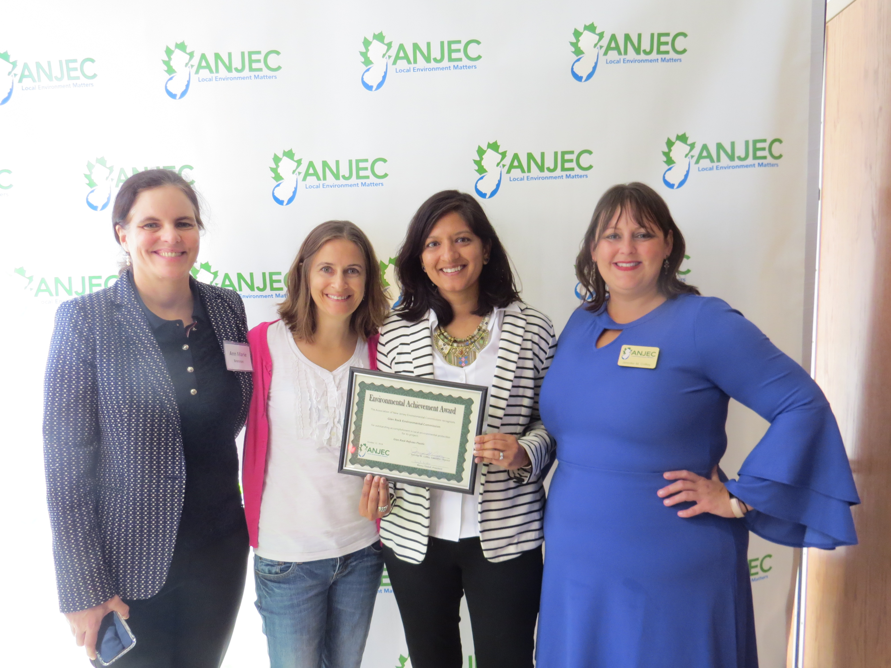
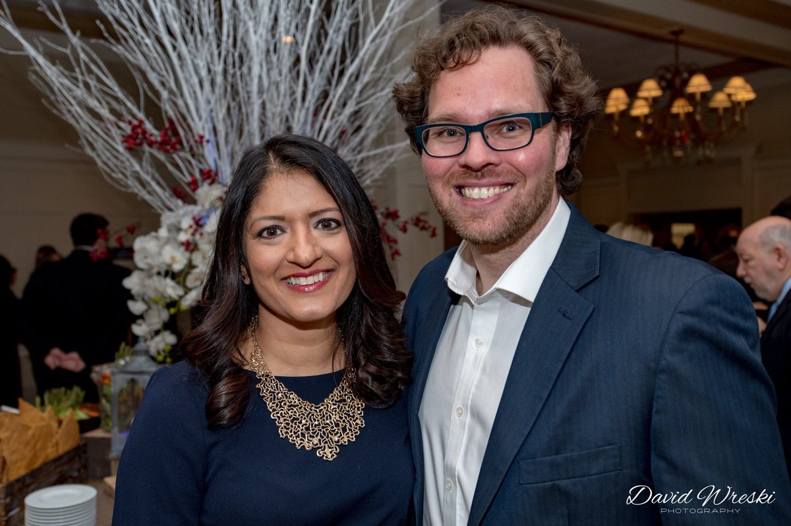

Dr. Arati Kreibich is a Councilmember in Glen Rock, a neuroscientist, and a mom. She immigrated to the U.S. when she was 11 years old with her parents and two younger brothers because they believed in the promise of America.
Growing up, Arati always wanted to be a scientist. She earned her PhD from the University of Pennsylvania in 2005 and became a neuroscientist. Her research focus on opiate addiction and her experience working with pharmaceutical companies gave her an unvarnished look at the serious shortcomings of for-profit healthcare. While pursuing her doctorate and career, she started a family with her husband Thomas, a neurologist. Her experience with limited parental leave crystallized for Arati the lack of support for working mothers.
The 2016 election was a defining event for Arati, and it spurred her to run for Glen Rock’s Borough Council in 2017. She won, becoming the first South Asian elected to the council. Arati has made the climate crisis a priority, leading a successful charge for town-wide clean energy consumption and a plastic bag ban.


As a medical researcher whose husband treats patients daily, Arati sees the need for healthcare for all. As a scientist, she understands the urgency of adopting bold action to address climate change. And as an activist, she's seen first-hand the corrupting influence of corporate money on government.